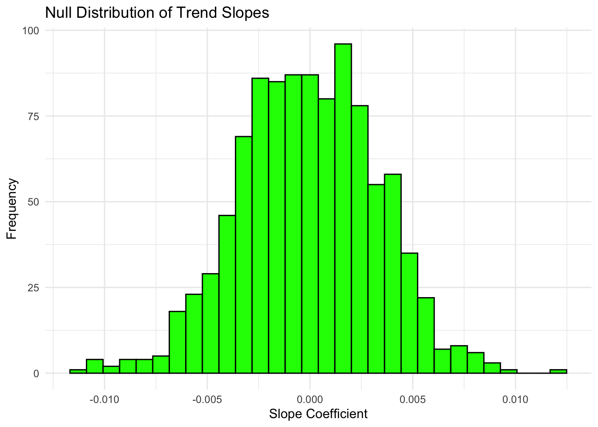
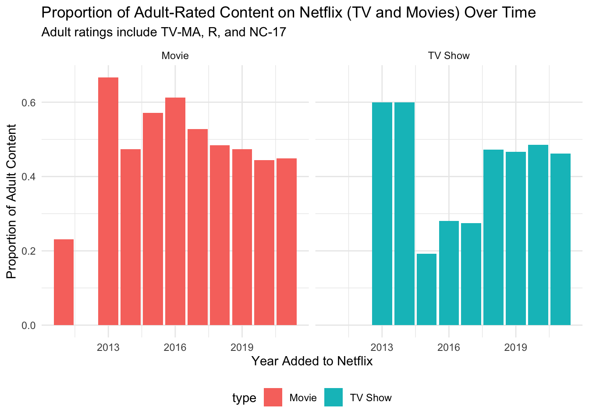

# Loading it in...
netflix <- readr::read_csv('netflix.csv', show_col_types = FALSE)
# Libraries...
library(readr)
library(stringr)
library(dplyr)
library(ggplot2)
library(purrr)
library(lubridate)
library(tidyr)Project 3
a simulation study
Introduction
Description
I will conduct a permutation test by simulating behavior under the null hypothesis using the Netflix dataset. This study will explore whether Netflix favors certain genres more than others in its acquisitions. Understanding the patterns in Netflix’s content distribution can provide insights into the platform’s strategic decisions and how they align with viewer preferences and industry trends.
Overview of Process:
- I cleaned the data by filtering out missing values, converting dates, and selecting relevant columns
- I created a function to calculate the trend in adult-oriented content over time
- I used map() to perform a permutation test that shuffles years to determine if the observed trend could happen by chance
- I created 3 plots, described below:
- Plot 1 - shows the null distribution from the permutation test
- Plot 2 - shows the proportion of adult content by year and content type
- Plot 3 - shows rating distributions across different time periods
From these tests, we can see different trends over time in the various ratings of content that Netflix provides.
Data and Libraries
This dataset was originally posted on Kaggle by @paramvir_705, and is updated monthly; it was originally collected from Netflix. The page doesn’t directly indicate further details, so this is assumedly a random chunk of Netflixs’ catalogs, neglecting country lines/firewalls (according to IPVanish, Netflix owns the rights to over 13, 000 titles when accounting for all coutries where they’re active). This is an important caveat to using this dataset, as it will be difficult to draw conclusions about Netflix’s overall behavior.
The dataset contains about 8,800 rows – each a different TV show or movie in Netflix’s catalog – and 12 columns (show_id, type, title, director, cast, country, date_added, release year, rating, duration, listed_in (basically genre)). Testing these variables lets us look for patterns in Netflix’s acquisitions, viewer preferences, and reactions to industry trends.
Hypothesising
Simulation Study
Cleaning
netflix_clean <- netflix |>
filter(!is.na(date_added) & !is.na(rating)) |>
mutate(date_Netflix = mdy(date_added)) |>
mutate(year_Netflix = year(date_Netflix)) |>
select(type, rating, year_Netflix)
head(netflix_clean)# A tibble: 6 × 3
type rating year_Netflix
<chr> <chr> <dbl>
1 Movie PG-13 2021
2 TV Show TV-MA 2021
3 TV Show TV-MA 2021
4 TV Show TV-MA 2021
5 TV Show TV-MA 2021
6 TV Show TV-MA 2021This table is just a sneak peek at the cleaned data that I’ll be passing through thr rest of the code.
table(netflix_clean$rating)
66 min 74 min 84 min G NC-17 NR PG PG-13
1 1 1 41 3 79 287 490
R TV-14 TV-G TV-MA TV-PG TV-Y TV-Y7 TV-Y7-FV
799 2157 220 3205 861 306 333 6
UR
3 And here is a peak at the distribution across ratings
Function
rating_trend <- function(data, adult_ratings = c("TV-MA", "R", "NC-17")) {
yearly_proportions <- data |>
mutate(adult_rated = rating %in% adult_ratings) |>
group_by(year_Netflix) |>
summarize(adult_prop = mean(adult_rated), n = n()) |>
filter(n >= 10)
if(nrow(yearly_proportions) < 2) {
return(NA)
}
model <- lm(adult_prop ~ year_Netflix, data = yearly_proportions, weights = n)
return(coef(model)[2])
}
observed_stat <- rating_trend(netflix_clean)
observed_statyear_Netflix
0.006055784 The function rating_trend calculates the trend in adult-oriented content on Netflix over time (at least across what is included in the dataset). It first identifies which titles have “adult” ratings (TV-MA, R, NC-17), then calculates the proportion of these ratings for each year – only considering years with enough data (>10 titles).
It then fits a weighted linear regression model to determine if there’s a trend over time; the proportion of adult content is the dependent variable and the year is the independent variable, with weights based on the number of titles per year. It returns the slope coefficient (0.006055784) from the regression model, which indicates that the yearly change in adult content proportion is positive. The slope coefficient suggests that the proportion of adult-rated content on Netflix has increased by approximately 0.006 (or 0.6%) per year. This means that, on average, each year Netflix adds a slightly higher proportion of adult-rated content compared to the previous year. However, whether this increase is statistically significant depends on the permutation test results (see next chunk)!
map()
set.seed(123)
n_permutations <- 1000
permutation_results <- map_dbl(1:n_permutations, function(i) {
permuted_data <- netflix_clean |>
mutate(year_Netflix = sample(year_Netflix))
rating_trend(permuted_data)
})
p_value <- mean(abs(permutation_results) >= abs(observed_stat), na.rm = TRUE)
p_value[1] 0.063This chunk does a permutation test to see the significance of an observed statistic related to Netflix ratings over time. I set a random seed (set.seed(123)) to ensure reproducibility and defined n_permutations = 1000 so that the test will generate 1,000 random shuffles.
In each iteration, the year_Netflix column is randomly shuffled (sample(year_Netflix)) to prevent any connection between time and ratings. I then use the function calculate_rating_trend(permuted_data) on the shuffled data to calculate a new statistic for each permutation; the results are stored in permutation_results.
The p_value (0.063) is calculated as the proportion of permuted statistics that are at least as extreme as the observed statistic (observed_stat), providing a measure of whether the observed trend in ratings is statistically significant. Since 0.063 is slightly above the common significance threshold of 0.05 this suggests that the observed trend (+ 0.06%) is not incredibly statistically significant at the 5% level but is still somewhat insightful. This means there is some evidence of a relationship between year_Netflix and ratings, but it is not strong enough to confidently reject the null hypothesis (which assumes no real trend exists).
Plot
# Plot 1: Null distribution from permutation test
data.frame(slope = permutation_results) |>
ggplot(aes(x = slope)) +
geom_histogram(bins = 30, fill = "green", color = "black") +
labs(
title = "Null Distribution of Trend Slopes",
x = "Slope Coefficient",
y = "Frequency"
) +
theme_minimal()
This is simply a plot of the null distribution of trend slopes. There is a reletively normal distribution/bell curve, with a few jagged edges; this indicates some variance, with general adhereance to expectations (normal distribution).
# Plot 2: Adult content proportion by year, faceted by type
graphflix <- netflix_clean |>
mutate(adult_ratings = rating %in% c("TV-MA", "R", "NC-17")) |>
group_by(year_Netflix, type) |>
summarize(adult_mean_prop = mean(adult_ratings), n = n()) |>
filter(n >= 5)
graphflix |>
ggplot(aes(x = year_Netflix, y = adult_mean_prop, fill = type)) +
geom_bar(stat = "identity") +
facet_wrap(~ type) +
labs(
title = "Proportion of Adult-Rated Content on Netflix (TV and Movies) Over Time",
subtitle = "Adult ratings include TV-MA, R, and NC-17",
x = "Year Added to Netflix",
y = "Proportion of Adult Content") +
theme_minimal() +
theme(legend.position = "bottom")
This graph displays the proportion of adult content in TV Shows and Movies over the years. For movies, we can see that the proportion of adult content added per year isreletively consistent post-2013. Before then, it seems that there was far less adult content, potentially indicating a younger general adience. For TV Shows, there is more variance, especially 2014-2017. There is a dip, potentially indiating a similar change/differnece in audience, or the expiration of deal with a company that produces mature content.
# Plot 3: Rating distribution over time periods, faceted by type
graphflix_2 <- netflix_clean |>
mutate(time_Period = case_when(
year_Netflix < 2010 ~ "Early (before 2010)",
year_Netflix < 2015 ~ "Middle (2010-2015)",
TRUE ~ "Recent (2018+)"
)) |>
group_by(type, time_Period, rating) |>
summarize(count = n()) |>
group_by(type, time_Period) |>
mutate(proportion = count / sum(count)) |>
filter(proportion >= 0.01)
graphflix_2 |>
ggplot(aes(x = reorder(rating, -proportion), y = proportion, fill = time_Period)) +
geom_bar(stat = "identity", position = "dodge") +
facet_wrap(~ type) +
labs(
title = "Netflix Content Rating Distribution by Time Period and Type",
x = "Content Rating",
y = "Proportion",
fill = "Time Period"
) +
theme(axis.text.x = element_text(angle = 45))
This graph shows the distribution of proportion of ratings of content over time; that is, each rating is divided into 3 time periods, and the proportion is calculated for each of these periods. This allows us to compare what netflix has attained over time by ratings.
It is clear that before 2010, Netflix likely had a much more mature audience,as they only acquired TV-MA content. They likely diversified their selection as the platform gained popularity in the early 2010s. It is also interesting to see that in TV Shows, Netflix has not aqcuired any PG, PG-13, or R rated content; maybe because of a lack of a demand for television content in these ratings? I think this will likely change soon, given the increasing popularity of knarly and graphic young adult television (see Euphoria) and increasing competition from companies like HBO.
Conclusion
Through this simulation study, I examined whether Netflix’s acquisition patterns reflect a significant trend in the proportion of adult-rated content over time. Using a permutation test, I compared the observed trend to a null distribution of randomly shuffled data, finding a slight increase in adult-rated content per year (~0.6%). With a p-value of 0.063, this trend slightly exceeds the conventional 0.05 significance threshold, suggesting that there may still be a weak trend, but not strong enough to confidently reject the null hypothesis.
The visualization of adult content proportions over time highlights interesting temporal trends, such as a relatively stable proportion of adult-rated movies post-2013 and notable fluctuations in TV shows between 2014-2017. These shifts may reflect changes in audience demographics, licensing agreements, or strategic content investments by Netflix. Additionally, the content rating distributions across different time periods suggest an evolution in Netflix’s offerings, catering to a heavily mature audience pre-2010 and attaining a more diverse content catalog in subsequent years.
Overall, while this study provides insight into Netflix’s content acquisition trends, limitations in dataset representativeness must be acknowledged. Additionally, applying more sophisticated statistical models, such as time series forecasting or causal inference techniques, could further clarify the extent and drivers of observed rating trends.